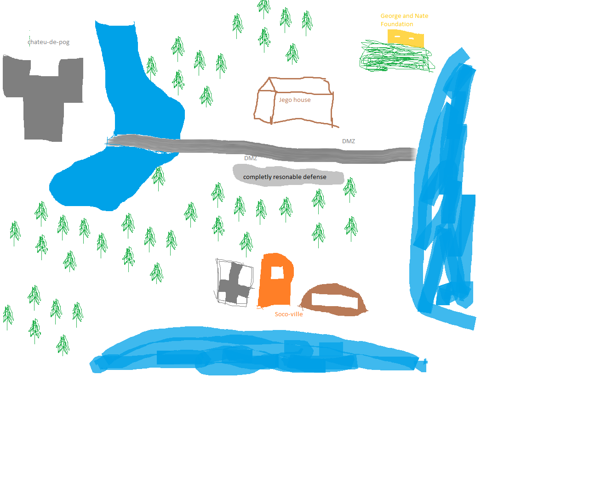
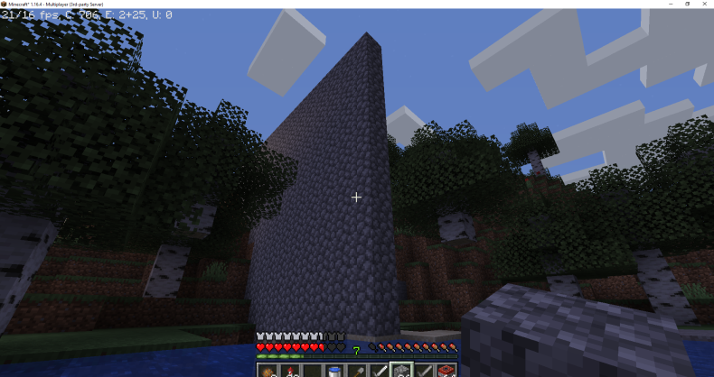
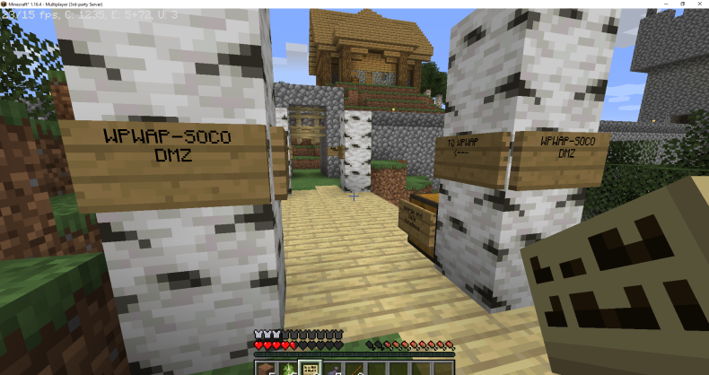
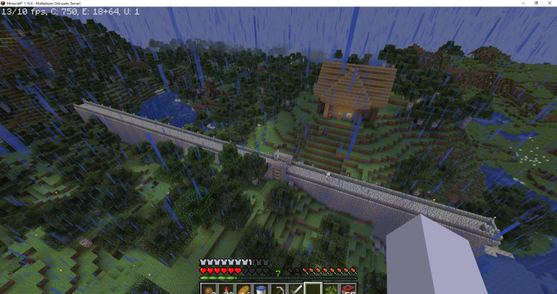
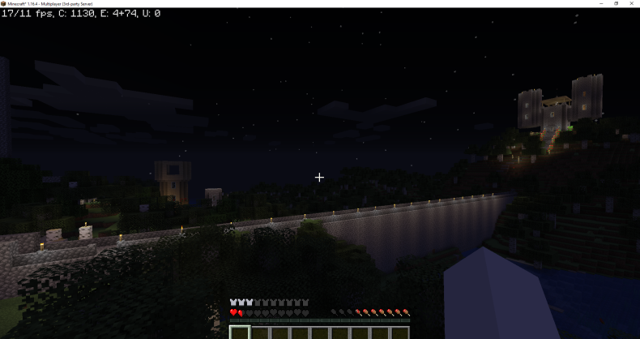
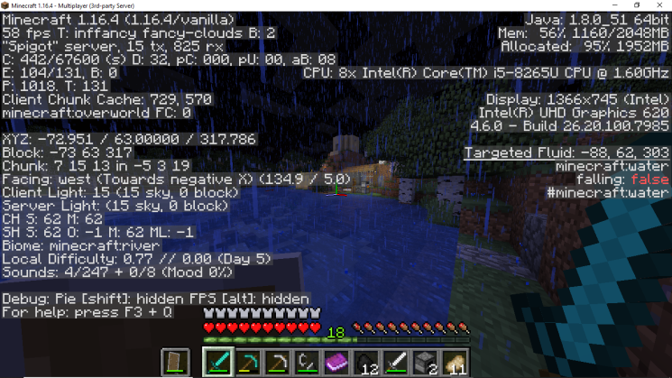
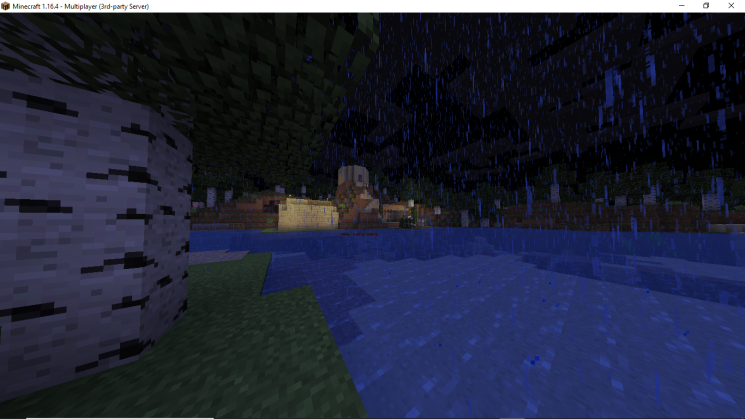
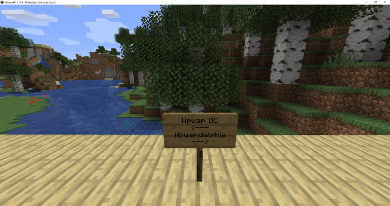
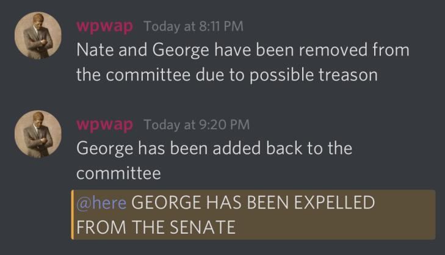

Wpwap Minecraft Resources
The 25th was the first day that Wpwap decided to settle in the SocoSMP server. It is unknown what happened in the server before Wpwap had joined, but Soco along with his tightly-knit friend group had already set up camp. Initial operations were kept secret, but have since been disclosed and can be found in the W.I.A section of the archives.
A diagram which describes the layout of the SocoSMP server as of 11/25/2020.
The DMZ's ocean border.
The bridge to cross the DMZ.
Aerial view of the DMZ.
Chateu De Pog overlooking the DMZ at night.
Soco's base.
Soco's side of the DMZ.
Border sign at the Wpwap D.C - Wpwapidelphia bridge.
Suspected of treason, George was expelled from the Wpwapian Senate.
